Pesci piccoli
Specie: Perca di Scoglio Piccolo · Perca Gialla Piccolo · Pesce Gatto Nebuloso Piccolo · Pickerel Piccolo · Pickerel Rosso Piccolo · Salmone Rosso Piccolo
Esche consigliate: Esca per Pesci Piccoli · Grilli · Libellula
Il manuale del Manzanita Post dedicato alla pesca, all’attrezzatura e alle ricette degli artigiani delle Wildlands.
Specie: Perca di Scoglio Piccolo · Perca Gialla Piccolo · Pesce Gatto Nebuloso Piccolo · Pickerel Piccolo · Pickerel Rosso Piccolo · Salmone Rosso Piccolo
Specie: Pickerel Medio · Salmone Rosso Medio · altri pesci con «Medio» nel nome
Specie: Luccio dal naso lungo (Northern Pike) · Pescegatto Grande · Pesce Storione
Le catture speciali del Manzanita. Per ciascun pesce sono indicati esca richiesta e luogo.
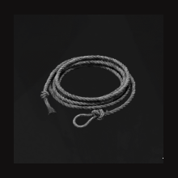
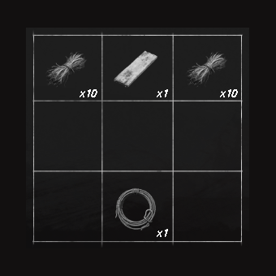
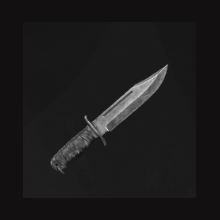
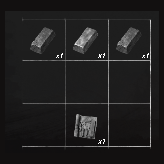
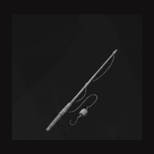
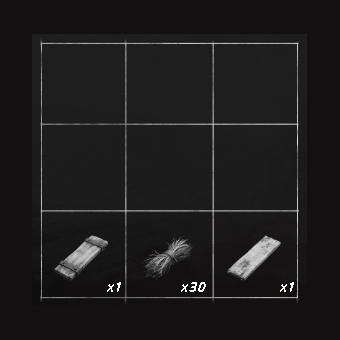
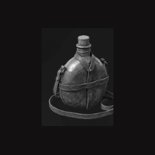
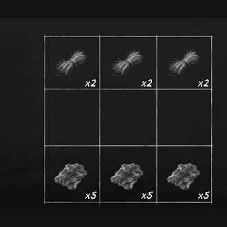
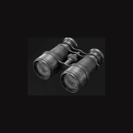
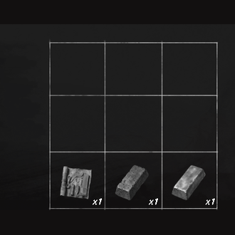
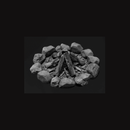
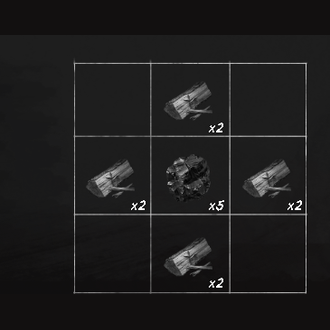
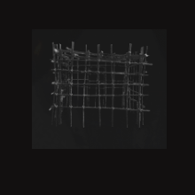
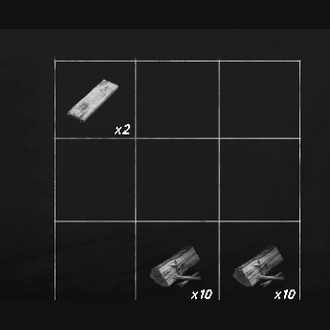
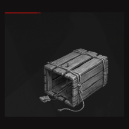
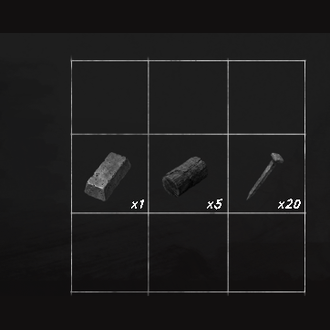
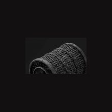
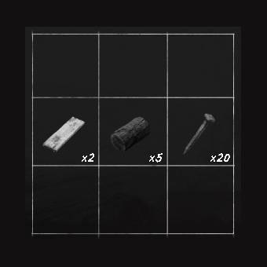
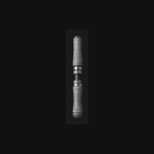
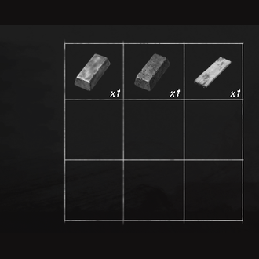
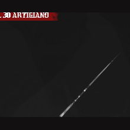
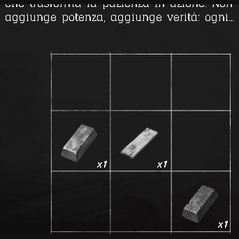
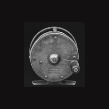
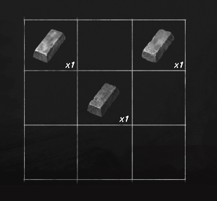
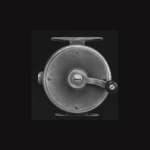
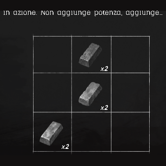
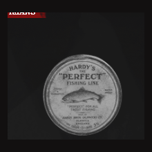
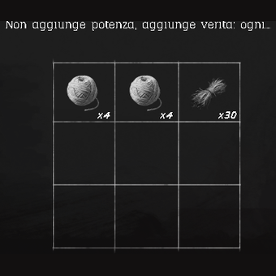
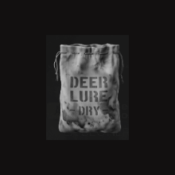
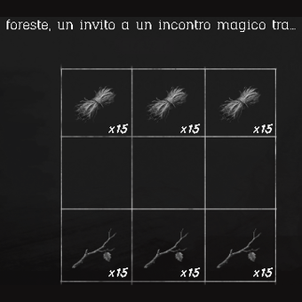
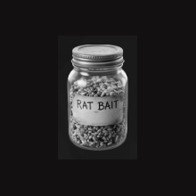
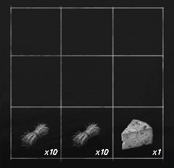
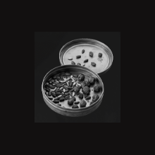
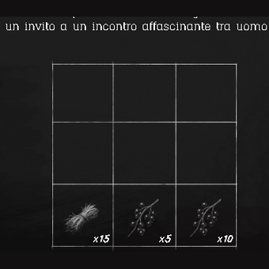
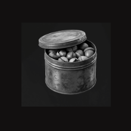
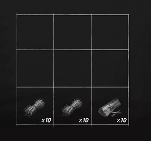
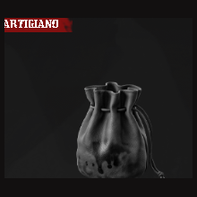
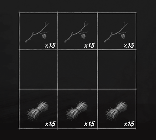
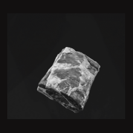
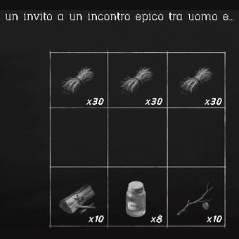
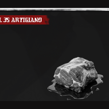
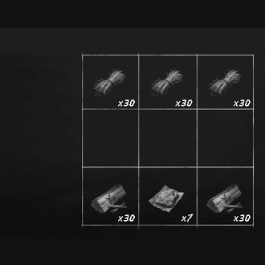
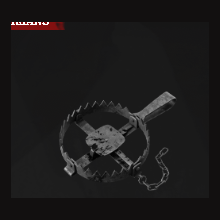
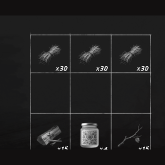
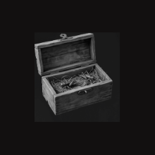
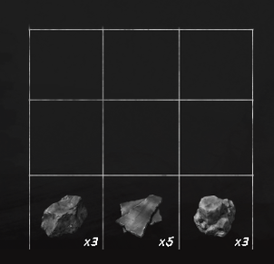
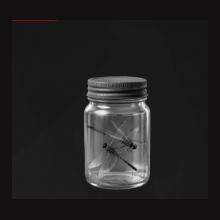
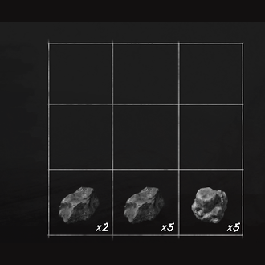
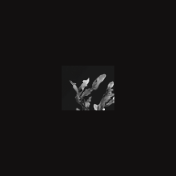
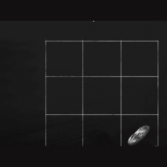